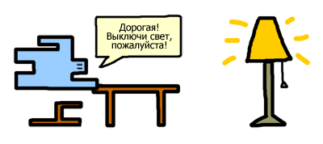
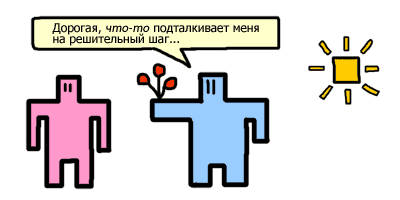

Все на собственном опыте знают, что струя воды в душе ощутимо давит на ваше тело, и слегка прижимает вас к ванне. Особо изощрённые сантехники могут подкрутить нужный вентиль, и вас буквально расплющит утренним душем. Менее очевидно то, что по такому же принципу существует давление и у света. Об этом сегодняшний небольшой рассказ.

Впервые о давлении света подумал, как это ни странно, мужчина. И совсем не под душем. Известный дядька Кеплер в 17 веке (17 век, это когда Иван Сусанин водил за нос поляков, а Кромвель всю Англию) пытался выяснить, почему хвостатые кометы всегда отворачивают свой хвост от солнца. Очевидно, что ответа на этот вопрос два и оба правильные. Во-первых, комета, как каждая порядочная женщина, всегда держится лицом к мужчине-солнцу. И, во-вторых, солнечные лучи действуют ничуть не хуже ветра распускающего волосы. Последний эффект солнечных лучей впоследствии так и обозвали солнечным ветром.
Более того, сам космический хвост кометы возникает именно по причине солнечного ветра. Кометы сами по себе это глыба льда и камней. Они летают себе где-то там далеко и ни о каком хвосте не знают. Но как только комета приближается к солнцу, солнечный ветер сдувает с её поверхности мелкие осколки, и они тянутся за кометой в виде хвоста. И чем ближе комета к солнцу, тем длиннее хвост. Чем не женщина!
Другой дядька — Петр Лебедев — в 1899 году сделал нехитрый эксперимент. Повесил вертушку под стеклянный колпак, выкачал из колпака воздух, чтобы он не мешал и светил на вертушку фонариком. Вертушка крутились. После чего уже самые упёртые снобы согласились — да, свет давит.
Но как-то жиденько давит. Слабовато будет.
Так оно и есть, иначе бы утром солнечные лучи сметали весь завтрак со стола через застеклённое окно. И не было бы сегодняшнего разговора — давит и давит, муравьи вон тоже, годами подгрызают банковские хранилища, и никто не суетится. Но совсем другая сила возникает в космических масштабах среди ярких звёзд.
Огромные светящиеся гиганты творят такое, что не снилось автомобильным фарам встречных машин, ослепляющие вас. Та же самая комета — это вам не одна бригада колхозников понадобится, чтобы хвост накопать. То есть, поверьте мне на слово, там не только завтраки со стола слетают.
И вот что я вам хочу сказать.
Поскольку мы все вокруг «звёздочка ясная» и «солнышко моё любимое», то и силу света волей-неволей придется нам учитывать в соответствующих масштабах.
Как минимум — держите своего мужчинку между собой и солнцем.

С любовью, уважением и давлением,
Зиновий.